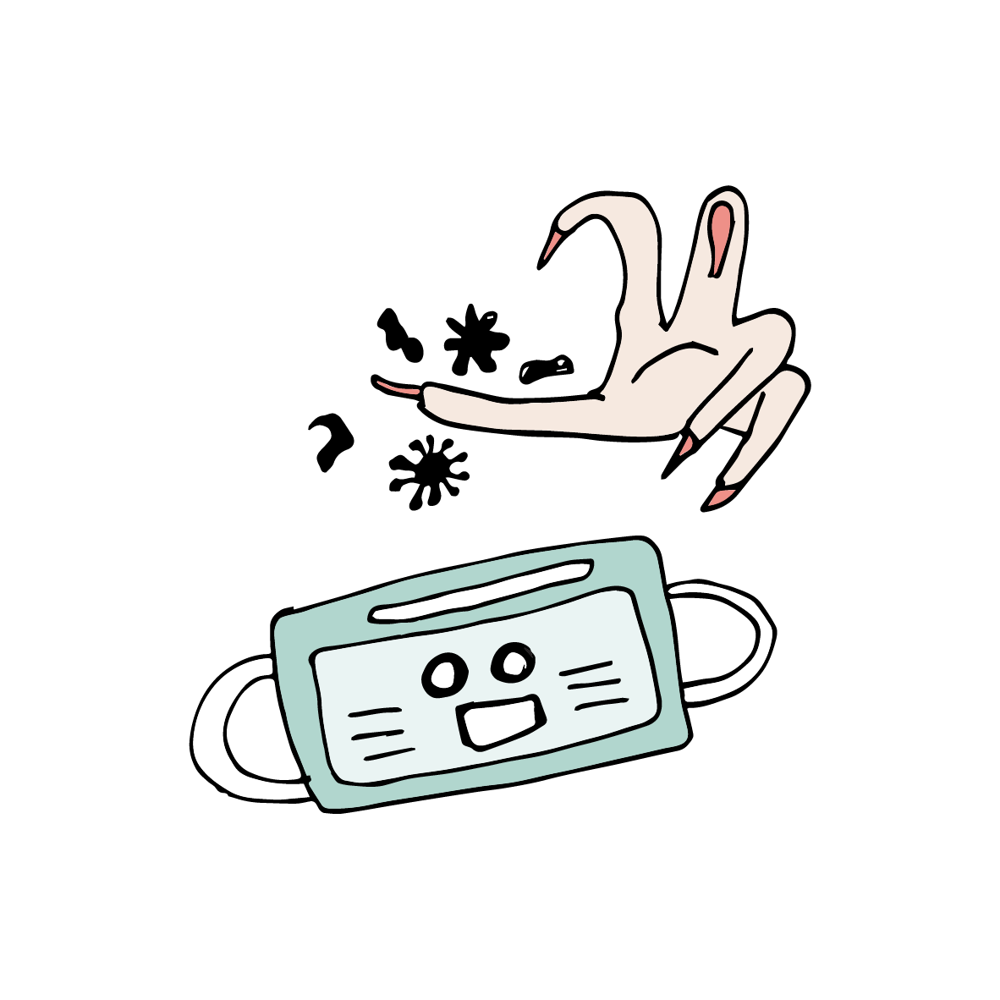
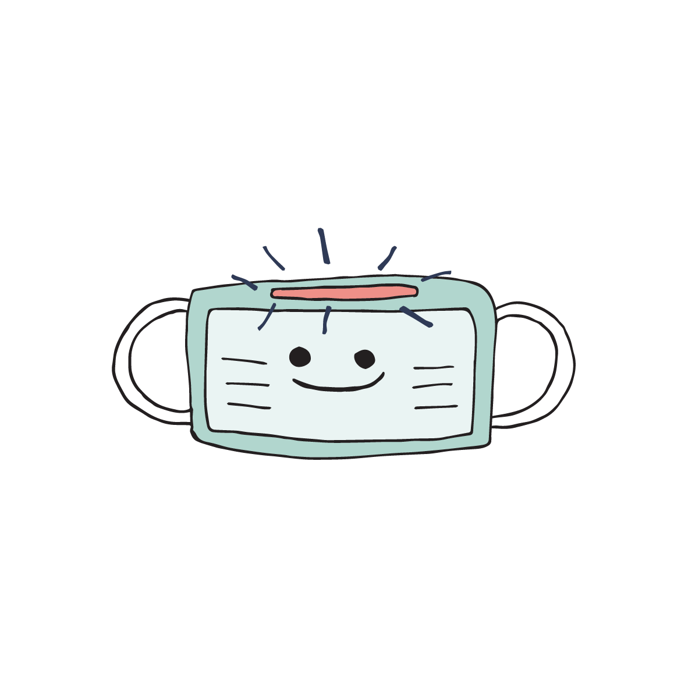
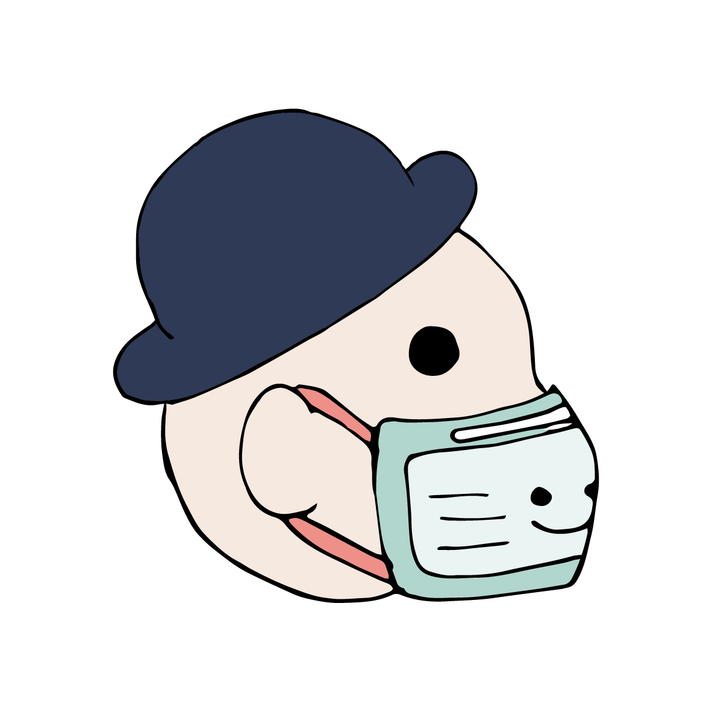

Wearing a mask could be difficult for first-timers. Fear not, we are here to help.
Before we get started, make sure your hands are clean, and you are
in a clean environment (i.e. not in a clinic, hospital, or anywhere
potentially contaminated).

Ready? Let’s get started.
First, inspect if the mask has any hole or tear, if there’s one, dispose it,
and get a new mask.
Then you'd need to figure out which side is the front, usually it would be
the coloured side of the mask.

Found it? Good, then you will need to find the metal strip, which locates at
the top of the mask. You can adjust the metal strip to ensure it fits tightly
to your face.

Okay! You are ready to put on your mask. Assuming you are using a mask with
ear loops, hold your mask with the ear loop, then place the loop around your ear.
Remember the coloured-side is the front of the mask.
Once you have put the mask on, adjust the mask to the shape of your nose by
slightly bending the metal strip on top of the mask.
Once you have put it on, pull the bottom of the mask down to your chin, make sure
it covers your nose, mouth and your chin. It is a good time to check if the mask is
fitted closely to your face - if you wear glass and if it fogs up when you breathe
- it is unfitted. Simply adjust the metal strip again!
Done! Simple as that! Remember to dispose your mask properly after using it.
And always remember to wash your hands, especially when you take off your mask!